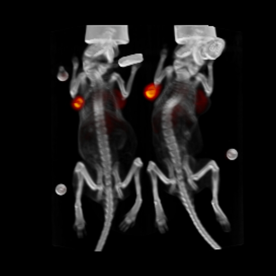

Jill is planning to take pairs of mice from several litters. One of the mice will receive the treatment while the other mouse will receive the placebo. Then Jill will measure the tumor size in each mouse. Since she is taking two mice from each litter, she is conducting a paired samples experiment.
Source: Julia Choi
The analysis of paired samples relies on calculating the difference between the two samples. Then this becomes a one sample procedure using the sample of differences. Thus the sample size formula used is a one sample formula and this will tell us how many pairs we need.
-- ErinEsp - 28 Feb 2010